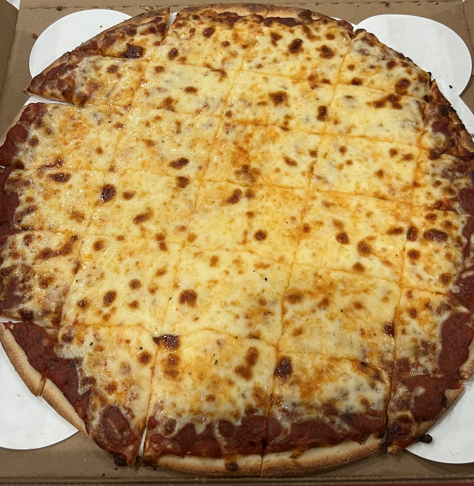

Home
Pizza

Description
Pizza is a popular Italian-origin dish consisting of a savory, flattened bread dough base topped with ingredients like tomato sauce and mozzarella cheese. Baked at high temperatures, usually in a wood-fired oven, it often features a crispy yet chewy crust, with a vast variety of toppings ranging from classic pepperoni to gourmet options.
Ingredients
- Self-Rising Flour
- Mozzarella Cheese
- Pizza Sauce
- Plain Greek Yogurt
- More Cheese
- Pepperoni Slices
Instructions
- Combine flour and yogurt to form a dough.
- Roll out the dough to desired thickness.
- Spread pizza sauce over the dough.
- Top with mozzarella cheese and pepperoni slices.
- Bake in a preheated oven for 12-15 minutes at 425 degrees, until crust is golden brown and cheese is bubbly.